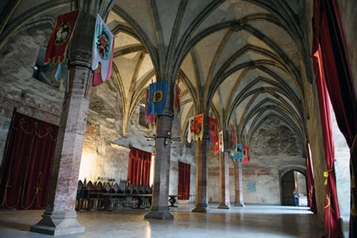

Castelul Corvinilor
Ridicat in secolul al XIV-lea, Castelul Corvinilor reprezinta una din cele mai frumoase si bine conservate constructii de acest gen din epoca medievala fiind cea mai vestita proprietate ale lui Iancu de Hunedoara impresionand prin prezenta sa ce domina orasul Hunedoara. Monumentul Castelul Corvinilor are un farmec aparte datorat stilurilor de constructie diverse, a prezentei unor inovatii in plan militar , precum si a vietii tumultoase de curte care l-a animat vreme de peste 400 de ani. Aceasta constructie a suferit de-a lungul timpului numeroase modificari devenind o somptuoasa locuinta nu numai un punct strategic.
Ioan de Hunedoara initiaza, dupa 1440, constructii de mare amploare vizând transformarea cetatii într-un castel, prima etapa cuprinzând ridicarea a doua curtine în jurul vechii cetati, construite din blocuri de calcar dolomitic, prevazute cu creneluri la partea superioara. Aceste ziduri de curtina erau flancate de turnuri circulare si rectangulare, primele constituind o noutate pentru arhitectura militara a Transilvaniei secolului XV. Turnurile circulare (Turnul Capistrano, Turnul Pustiu, Turnul Tobosarilor), cu exceptia turnului pictat (Turnul Buzdugan), erau prevazute cu un parter din zidarie plina, urmat de doua niveluri, cele de la partea inferioara fiind utilizate ca si camere pentru puscasi iar cele de la partea superioara ca si zone de locuit si/sau zone de aparare. De notat faptul ca turnul Capistrano cuprinde singurul semineu gotic (restaurat) din monumentul hunedorean. Turnul pictat (Turnul Buzdugan) are un singur nivel de aparare si este pictat în fresca la exterior cu motive geometrice si guri de tragere, cu corespondente tipologice în spatiul german. Turnurile rectangulare plasate în zonele de nord-vest, respectiv sud-est ale castelului (turnul vechi de poarta, turnul nou de poarta) erau prevazute cu intrari carosabile si niveluri de aparare, gândite atât pentru arme cu coarda cât si pentru arme de foc. Intrarile propriu-zise în castel se faceau prin intermediul unor poduri, sustinute de piloni de piatra, ultimele tronsoane ale podurilor fiind mobile. Un punct de interes în castel îl reprezinta fântâna, sapata în spatiul dintre curtina veche si cea noua.
Se admite, în general, faptul ca prima etapa de constructie a castelului se încheie înainte de 1446, moment la care Ioan de Hunedoara devenit guvernatorul regatului Ungariei, modifica planurile de edificare ale castelului, în sensul cresterii ponderii constructiilor civile. Una dintre cele mai interesante constructii datate în aceasta perioada o reprezinta capela, plasata pe latura estica a castelului. Nava de forma dreptunghiulara, este precedata de un pronaos, deasupra caruia este sprijinita pe stâlpi hexagonali o galerie cu tribuna. Particularitatile constructive ale altarului, regasite la alte constructii ecleziastice din zona sunt legate de arhitectura gotica locala.
Palatul propriu-zis, amplasat pe latura vestica, este compus din Sala Cavalerilor, Sala Dietei si scara spirala si reprezinta un exemplu unic în spatiul transilvanean de arhitectura civila de un rafinament ridicat. Ambele sali au un plan dreptunghiular, fiind divizate în doua nave cu cinci piloni octogonali din marmura, cu nervuri în cruce si console ornamentate, cu chei de bolta în stil gotic, faza târzie. Functionalitatea acestor sali ne este sugerata de corespondentele tipologice din mediul teuton, respectiv de sala de mese la ocazii festive pentru Sala Cavalerilor si de sala de festivitati pentru Sala Dietei. O nota distincta este data de amplasarea pe partea vestica a salii Dietei a unei galerii cu burdufuri, sprijinita pe console, element unicat pentru arhitectutura civila transilvaneana, cua analogii în spatiul german.
O alta constructie unica de factura militara este reprezentata de galeria si turnul Nje Boisia (Nu te teme), denumire impusa probabil sub influenta mercenarilor sârbi, aflati în garnizoana castelului. Turnul propriu-zis, alcatuit din 5 niveluri de aparare, este prevazut cu deschideri pentru arme de foc. Legatura cu castelul este asigurata prin intermediul unei galerii suspendate, lunga de peste 33 m, galerie ce se sprijina pe stâlpi masivi, din calcar dolomitic.
A doua faza de constructie înceteaza o data cu moartea lui Ioan de Hunedoara si cu începerea luptelor pentru ocuparea tronului regatului maghiar. Probabil ca, dupa 1458, se initiaza lucrari, în zona nordica a castelului, rezultând asa numita aripa Matia, compusa din logii, pictura cu subiect laic existenta aici fiind un unicat. Se admite, în general, faptul ca finalizarea lucrarilor la castel înceteaza în jurul anului 1480, monumentul fiind comparabil cu castelele din vestul Europei, prin amploare si fast.
În secolul XVII, principele Gabriel Bethlen, modifica în spiritul vremii, parti din castel, modificari dictate atât de necesitati civile cât si militare. Se construieste pe latura estica, peste fundatii mai vechi, un corp de cladire, denumit Palatul mare dinspre oras, compus din doua niveluri, respectiv camere de locuit si o sufragerie. Tot în plan civil, Sala Dietei este reamenajata, prin demontarea întregii arhitecturi gotice de piatra, si compartimentarea ei, rezultând încaperi cu functionalitati diverse. De mentionat este faptul ca la primul nivel, rezultat în urma acestei interventii, se pastreaza urmele unei picturi în fresca, ce prezinta nobili si reprezentari de fortificatii ale vremii. Si aspectul interior al capelei a fost modificat substantial în vremea lui Gabriel Bethlen. Astfel, sunt înlaturate boltile gotice, ferestrele sunt trasformate într-unele rectangulare prin îngroparea partii lor superioare în molozul de egalizare din pod; de asemenea este deschis un pasaj de legatura între aripa Bethlen si aripa Matia. Lucrarile de factura militara sunt reprezentate de construirea Turnului Alb si a Terasei de Artilerie. Turnul mentionat este de forma semicirculara, prevazut cu 3 niveluri de aparare, sprijinite pe bârne de lemn si deschideri pentru arme de foc. Terasa de artilerie functiona ca o platforma deschisa pregatita pentru arme grele de foc. Tot în secolul al XVII-lea se construieste curtea exterioara (curtea husarilor), spatiu care adapostea locuintele administatorului, ale functionarilor, casa ogarilor si depozitele pentru hrana si fânat.